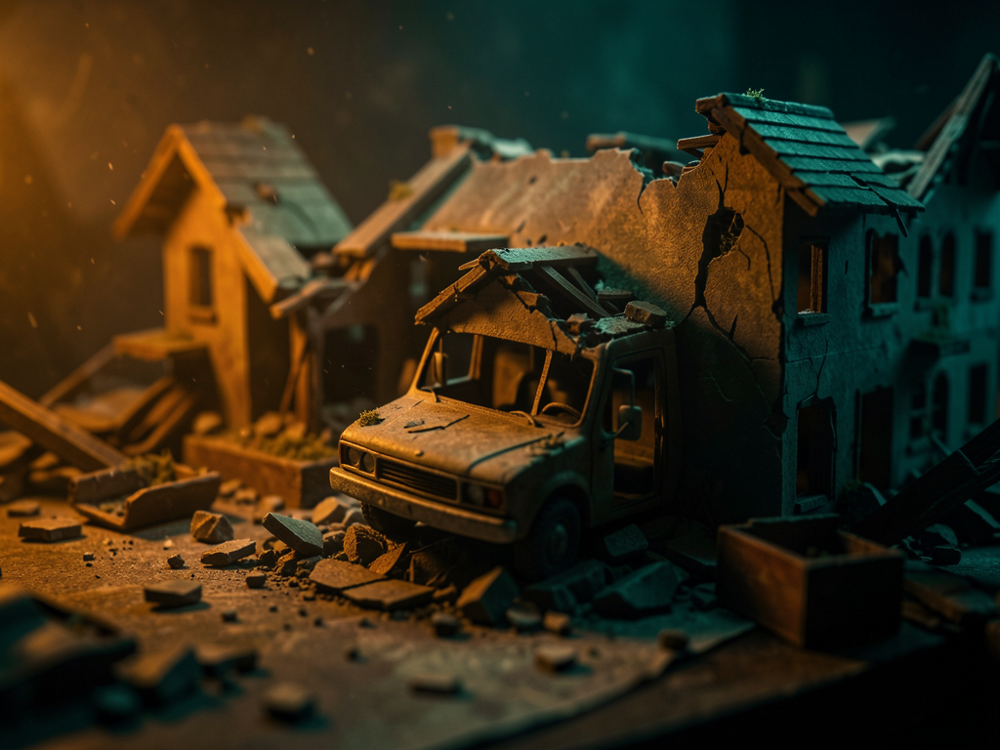
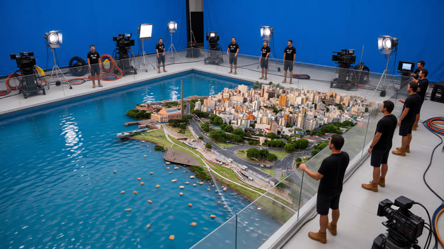
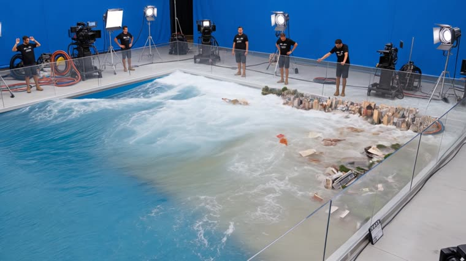

A photo goes in; an ultra-realistic behind-the-scenes video comes out: the subject in the photo rebuilt as a miniature inside a studio rig, with a blue screen and crew in frame, and a wave (or fire, earthquake, explosion, snow) destroying everything in a single shot. Two recipes measured across ~15 real clips.

The viewer doesn’t see a disaster movie: they see the crew filming the destruction of a miniature set. That’s what makes the video look real.
The reference controls the architecture, facades, colors, and proportions — building by building. No invented landmarks.
The water is real mass at real scale; only the buildings are miniatures. Debris has weight, friction, and collision — it doesn’t float without gravity.
A continuous iPhone shot from 10-15 m away, with the tank, barrier, cranes, pumps, and dry crew in frame the whole time.
Reference: an aerial photo of the Porto Alegre waterfront. Output: the same waterfront as a miniature being swept by a practical wave effect. Kling v3.0, native audio in both.
The video generator needs to receive the miniature already assembled as the first frame. With the raw photo, it understands “transform this photo”: the real city dissolves into cubes and the wave never appears.
Image-to-video from one frame + text. Better water physics, continuous shot, and audio in the same pass. Runs on a Pro/SVIP subscription (plan credits).
It only has mode: keyframes (2 to 3 images) — this is not image-to-video. It’s for generating keyframe A faithfully and iterating on the composition for free before spending credits.
Two credentials and ffmpeg. This project installs nothing.
Generates keyframe A and free videos.
# AGNES_API_KEY in: ~/projetos/agnes-nei/.env
Logged in with a Pro/SVIP subscription.
kling who_am_i # confirm the account
To measure and check the output — the size the API lies.
ffprobe -v error -show_entries \
format=duration filme.mp4The real work is in step 2: writing the --lock looking at the photo.
Any photo of the subject: city, waterfront, building, product. It defines the miniature’s layout — and the video’s aspect ratio comes from the keyframe’s, so choose 16:9 or 9:16 here.
cd ~/projetos/video-making-of-skill # sample photos in doc/
O --lock you write looking at the photo, in English, element by element.
Without it, the generator invents generic city blocks. Choose the rig in --efeito:
onda, fogo, terremoto, explosao, neve.
scripts/kf_a.py doc/poa2.jpg out/kf_a.png \ --ratio 16x9 --efeito onda \ --lock "the same orange-brick power-plant hall, the same tall slender chimney, the same white apartment blocks behind the treeline, the same curved promenade"
Two questions: Is the miniature recognizable as the photo? And is it up against an edge, with open water on one side only? If it becomes an island surrounded by water, the wave comes from two sides — text can’t fix the geometry. Regenerate.
# open out/kf_a.png and take a look. This step saves credits.
Single shot, no required final frame, native audio. The script submits with --poll 0 and
retrieves the result using query_tasks — the CLI's long poll crashes on its own.
scripts/render_kling.sh out/kf_a.png out/filme.mp4 \
prompts/avcc-ondas-16x9-en.txt
It interpolates between keyframes, so it needs three: A intact, B at the moment of impact and C destroyed. With only two, it morphs — the wave disappears and the buildings are replaced by generic little houses.
scripts/render_agnes.py --kf A.png B.png C.png \
--prompt-file prompts/avcc-ondas-16x9-en.txt \
--out out/filme.mp4 --ratio 16x9
Same source photo: the Porto Alegre waterfront with the Usina do Gasômetro smokestack.


Honesty about what was actually run.